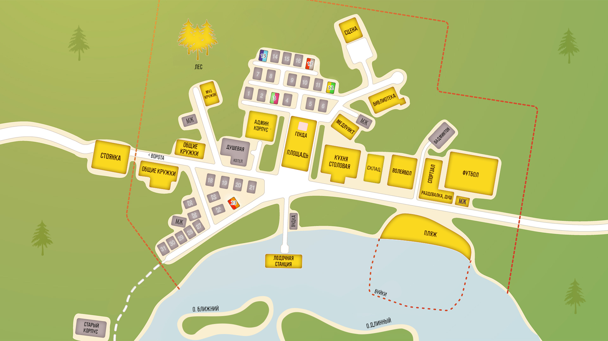

Домарощинер написал(а):
Это вселенная автора.
Он признал это! Браво!

7 дней лета |
Вы здесь » 7 дней лета » Флудильня » Бар "7 летних ночей" - 6

Это вселенная автора.
Он признал это! Браво!

признал это
Уверен, простая оговорка.
из здания администрации
Если взглянуть на карту лагеря, то видно, что здание администрации не находится напротив Генды. Напротив Генды вообще нет строений (не считая пристани где-то на берегу), если я правильно помню.
Про вторую, помимо неожиданного (для взаимного расположения зданий) ракурса, могу лишь субъективные соображения высказывать, но не буду.
для разнообразия обсуждать тему, а не меня.
Так во флудилке это и есть тема недели!!!
[EDIT]
Ладно, если чуть по существу - описывай лично я, как Сэм выглядывает из окна администрации на площадь - поставил бы, в соответствии с традициями ВН, просто бэк площади. Категорически никаких фрамуг-окошек.
Ну или ЦГ заказывать.
Отредактировано Ленивый Бегун (2016-12-18 18:21:15)

Ладно, если чуть по существу - описывай лично я, как Сэм выглядывает из окна администрации на площадь - поставил бы, в соответствии с традициями ВН, просто бэк площади. Категорически никаких фрамуг-окошек.
Так реалистичнее. С рамочкой

Для сценки побега Сёмы из здания администрации, я зафотошопил две картинки. Не забывайте, что взгляд из глаз Слави.
Какая из них больше подходит? Или обе говно?
Если верить карте "Совёнка", то здание администрации никак не может быть напротив Генды. Так что первый вариант отпадает. Второй вариант более правдоподобней, если смотреть на карту, но вот ракурс... Ракурс маленько не такой.

Так реалистичнее
описывай лично я
.....
в соответствии с традициями ВН
.....
Ну или ЦГ заказывать.
А впрочем - каждый ***, как он хочет.
Отредактировано Ленивый Бегун (2016-12-18 18:28:50)
Я к чему веду-то?
Любой стандартный бэк - это некая условность. Мы молчаливо соглашаемся, что ракурсы, перспектива и перемещение по пространству сцены (сцены!) - условности, которые не будут отражены визуально (разве что зум или тряску пустить).
Как только появляется некий объект, дающий чёткие пространственные привязки (здесь - оконная рама) - все условности сходят на нет. Мы немедленно желаем правильных ракурсов и прочая, и прочая.
И всё же, может
Вполне может.
У каждого из нас всегда есть возможность открыть собственное казино с блек-джеком и выпивкой/шлюхами.
Грех не поспользоваться этой возможностью.
Отредактировано Ленивый Бегун (2016-12-18 18:44:39)
Уж лучше пустить фон с домиком в рамке и сделать вид, что это творилось с северной стороны здания администрации (где брошка - там перед север на картах обычно сверху)
А, ну раз по этому пункту возражений не возникает, тогда больше и вопросов нет. Сёма умер в прологе окончательно, всё последующее - бред его умирающего мозга, последний сон.
А во сне может быть что угодно. Можно ходить в мокрой майке, да хоть вообще голым! И дальше соответственно, претентзий к тексту вообще не может быть никаких.
Собственно, темы "Логика" и "Нестыковки" можно без потерь удалить с форума, оставить только чистку ошибок. Русский-то язык остается!
Как-то так...
Почему вас так клинит на этих людях?
Яркий пример: вы являетесь элементом нашего пространства, полностью подчиняясь всем его законам. Впрочем, как и все мы. Там же аналогичная ситуация.
Есть и другой вариант: если после падения, Семен совершает смещение в сопряженный Совенок, то там эти девушки даже могли не смотреть на него после приезда.
Опять же, все упирается в нехватку начальных условий.
Отредактировано Технократ (2016-12-19 08:12:16)
Пф-ф-ф.
Приезжает Сёмка в лагерь. Такой загадочный посольский ребенок. И все ждут чего то романтического. А он начинает подтупливать. Не тупить, а именно подтупливать. И девушкам он вроде-бы и симпатичен, а чего-то не хватает, для развития серьезных отношений. И девушки начинают ворчать про себя от неудовлетворенности. И, когда он на 3 день таки падает с крыши он получает в глазах женской части общественности клеймо неудачника. Вот и все

Дядя, вот объясни мне, чего ты хочешь? От мода, от этого форума, от автора, от сообщества? Свой мод ты уже написал, прекрасно. Чего ты ещё хочешь? Полностью разобраться в особенностях вселенной 7дл? Не выйдет, так как часть дырок оставлена намеренно, под объяснения в будущем. Да ты и не хочешь объяснений, потому что любое, абсолютно любое объяснение ты превращаешь либо в "так не бывает, я точно знаю, так не бывает и быть не может", либо в "ну если вы так говорите, то может быть вообще всё, и вопросы задавать смысла нет, и ни в чём смысла нет, пойду поплачу".
Так чего же ты хочешь? От этого форума, от автора, от сообщества? Зачем ты здесь?
Или ты просто обыкновенная внимание-то-самое-слово?
Может Лена звать Бориса дядей Борей?
Только если они знакомы еще и вне лагеря.
Может Лена звать Бориса дядей Борей?
Она и так называет его дядей Борей.
me "Физрук у вас, конечно…" un "Дядь Боря хороший, просто считает, что все должны быть хорошо развиты."
Кроме Лены, кстате, его так называют все пионерки лагеря, кроме Рыжевской (У неё я такую реплику не нашёл).
Отредактировано Vegeta (2016-12-20 08:36:28)
Она и так называет его дядей Борей.
За глаза, как прозвище. В лицо так звать, это только Славя на такое способна.
Хорош.
Мы же уже определились, что вне лагеря нет ничего.
Я тут человек новый, со своими странностями и догадками.
Можете пояснить, как вы пришли к такому выводу, ибо у меня понимание строго обратное.
Мы
Мы?
Выше, последние страницы три про это. Мы же с тобой это всё и обсуждали.
Отредактировано Домарощинер (Сегодня 09:36:14)
Эм, насколько я помню, я ничего про конечность пространства не писал.
Ибо несколько моментов говорят нам строго об обратном. Да и сама концепция поддерживает идею о работе "наших" законов физики, что уже делает совенок, так сказать, "объемным".
Наши законы физики в Совёнке не работают. Иначе, сцены секса в лодке в руте Лены бы не было.
О! Отлично!
Если мы говорим о физике, то попрошу экспериментальных или расчетных доказательств. Например: То что Автор назвал лодки плоскодонками, еще ни о чем не говорит. Стандартно, лодочные станции комплектовались либо "Фофанами" (Но это -- глубокая древность), либо шпоновыми ШПШ-3М и их потомками (Форель, Кефаль), либо стеклопластиковыми Пеллами. А они спроектированы с расчетом на чайников, которые в первый раз весла видят и довольно таки остойчивы.
От лодочной до острова от силы метров 50, однако Сёма гребёт не знаю сколько времени и чуть не падает на песок без сил.
Вы видите масштабную линейку на карте? Я нет. Это не более чем рукописные почеркушки, это даже кроками не назовешь.
Нет.
Наши законы физики в Совёнке не работают. Иначе, сцены секса в лодке в руте Лены бы не было. Да и еще много чего.
Как вы умудрились связать законы физики и секс в лодке?
Впрочем, суть не в этом. Вот, собственно, логика, согласно которой, законы там все же наши: Присутствует гравитация, ибо все окружение более или менее схоже с нашим, возьму на себя даже смелость утверждать, что G там почти не отлично от нашего. Законы ТДС так же выполняются, наличие простейших погодных эффектов. Электричество - та же песня. Оптические системы тоже присутствуют: те же очки шурика и стекла в домах.
Исходя из выше написанного, можно прийти к незатейливому выводу, что все же физика там наша, может константы другие, да и то не сильно.
во сне
В сказке, уважаемый коллега, в сказке!
"Ты думал ты в жизнь вляпался? Нет, дружок, ты в сказку попал!" -- Я чуть перефразировал оригинал однажды, и тоже работая над фанфиком БЛ.
У меня был секс в Пелле и неоднократно, был секс и в деревянных лодках
Так был, или "невозможно"? Да еще и неоднократно?
Мне не нужны ваши расчёты. У меня был секс в Пелле и неоднократно, был секс и в деревянных лодках. Полевые испытания не подтверждают ваши теоретические выкладки.
Такие дела.
Но мы не можем утверждать о истинности или несостоятельности теоремы исходя из одно конкретного случая, ибо Гаусса никто не отменял. Ваш опыт должен быть повторен как минимум в трех различных лабораториях, под строгим контролем научных сотрудников =)
Технократ
Чего вы назад отрабатываете? Вы же сами меня страниц десять убеждали, что наши законы в Совёнке не работают. И убедили-таки!
Я согласен! Всё отлично вписывается и укладывается!
Простите, но там речь шла не совсем о законах физики. Вернее не об основной их части, о так называемой "базе".
А деревянная лодка, товарищи, имеет ребра жесткости или шпангоуты, если хотите правильное название. Ребра эти расположены примерно каждые 50 см.
В шпоновой скорлупе? Где жесткость задается монококом корпуса и продольным набором (киль и привальные брусья)?

Вы с шестивесельным ялом не путаете?
Не хочу об этом больше говорить. Меня опять выгонят, хижину мою порушат. А я послезавтра собрася свой мод готовый выкладывать на суд публики.
Да, вы, теоретики во всём правы! А я, практик, отдавший всю жизнь воде - слажал.
Давайте закончим на этом.
Любое мнение имеет право на жизнь, если оно подкреплено фактами.
Личный же опыт, за факт принять достаточно проблематично, особенно, если с ним знакомы только вы.
Вы здесь » 7 дней лета » Флудильня » Бар "7 летних ночей" - 6